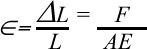

| Objetivo: |
| Estudiar la relación entre alargamiento de un muelle y la fuerza empleada. Reconocer el concepto del estipulado por Hooke, entender la naturaleza de la constante de elongación de un resorte. |
| Material |
| Introducción: |
| En física, la ley de elasticidad de Hooke o ley de Hooke, originalmente formulada para casos de estiramiento longitudinal, establece que la deformación ε de un material elástico es directamente proporcional a la fuerza aplicada F:  Donde: ΔL: alargamiento longitudinal, L: Longitud original, E: módulo de Young o módulo de elasticidad, A sección transversal de la pieza estirada. La ley se aplica a materiales elásticos hasta un límite denominado límite de elasticidad. Esta ley recibe su nombre de Robert Hooke, físico británico contemporáneo de Isaac Newton. Ante el temor de que alguien se apoderara de su descubrimiento, Hooke lo publicó en forma de un famoso anagrama, revelando su contenido un par de años más tarde. |
| Desarrollo Experimental: |
Preparación
Experimento 1:
Experimento 2:
|
| Resultados y Conclusiones: |
| Muelle blando: Ver Tabla Muelle duro: Ver Tabla Como puede observar en los resultados el alargamiento es proporcional a la fuerza. El muelle blando se alarga más que el duro al cargarse ambos igualmente. Llene las tablas descritas, con los datos obtenidos determine la constante de elongación de los resortes de experimentación. Por medio del análisis dimensional de la expresión de proporcionalidad de la ley de Hooke, exprese las unidades de la constante. |
| Figura 1: Montaje |
 |